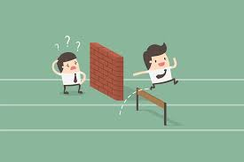
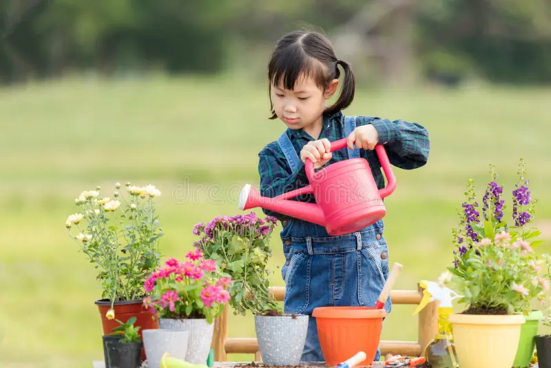

Los valores ambientales son principios que nos guían para cuidar la naturaleza. Son como brújulas éticas que nos ayudan a decidir con conciencia ecológica. Por ejemplo, respetar la vida, actuar con responsabilidad y pensar en las futuras generaciones.
Actitudes que transforman
Las actitudes muestran cómo nos sentimos y actuamos frente al medio ambiente. Una actitud positiva nos lleva a participar, cuidar y aprender; una negativa nos aleja del compromiso. Fomentar empatía y responsabilidad es clave.
Creencias que impulsan el cambio
Las creencias son ideas que tenemos sobre la naturaleza y su valor. Si creemos que “cada acción cuenta”, es más probable que actuemos con conciencia. Estas creencias influyen directamente en nuestras actitudes y comportamientos.
Del pensamiento a la acción
Lo que pensamos se convierte en lo que hacemos. Una creencia genera un valor, que forma una actitud y finalmente se traduce en acción. Ejemplo: “El agua es vida” → respeto → cuidado → uso responsable.
Comportamientos sostenibles
Acciones como separar residuos, usar bicicleta o reutilizar materiales reflejan coherencia entre lo que creemos y lo que hacemos para cuidar el planeta.
Obstáculos y oportunidades
En el camino hacia una cultura ambiental hay barreras como la desinformación o el desinterés, pero también oportunidades como la educación, la tecnología y el trabajo en comunidad.

Educación emocional y ambiental
Este enfoque une lo afectivo con lo ecológico. Las emociones pueden motivar acciones positivas. Educar desde lo emocional fortalece el vínculo con la naturaleza.

Tu huella simbólica
Invitamos a cada persona a crear un símbolo que represente su compromiso ambiental. Puede ser un mandala donde cada pétalo refleje un valor, actitud o acción.